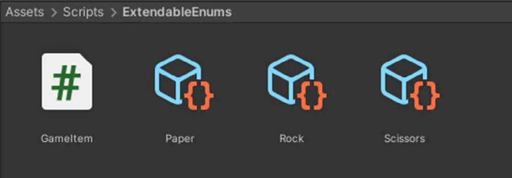
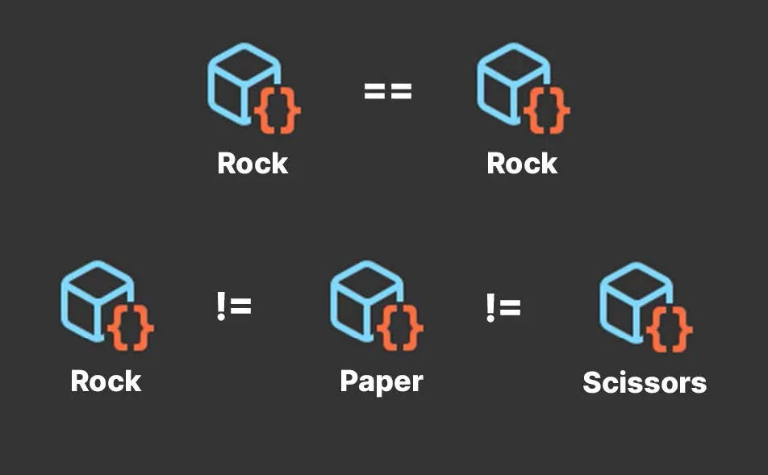
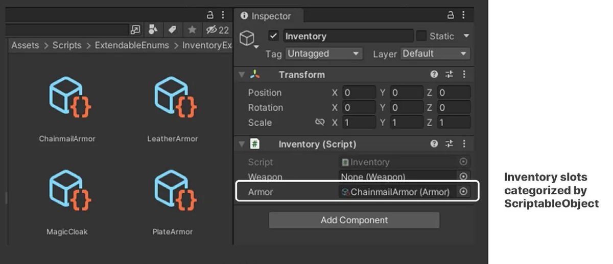
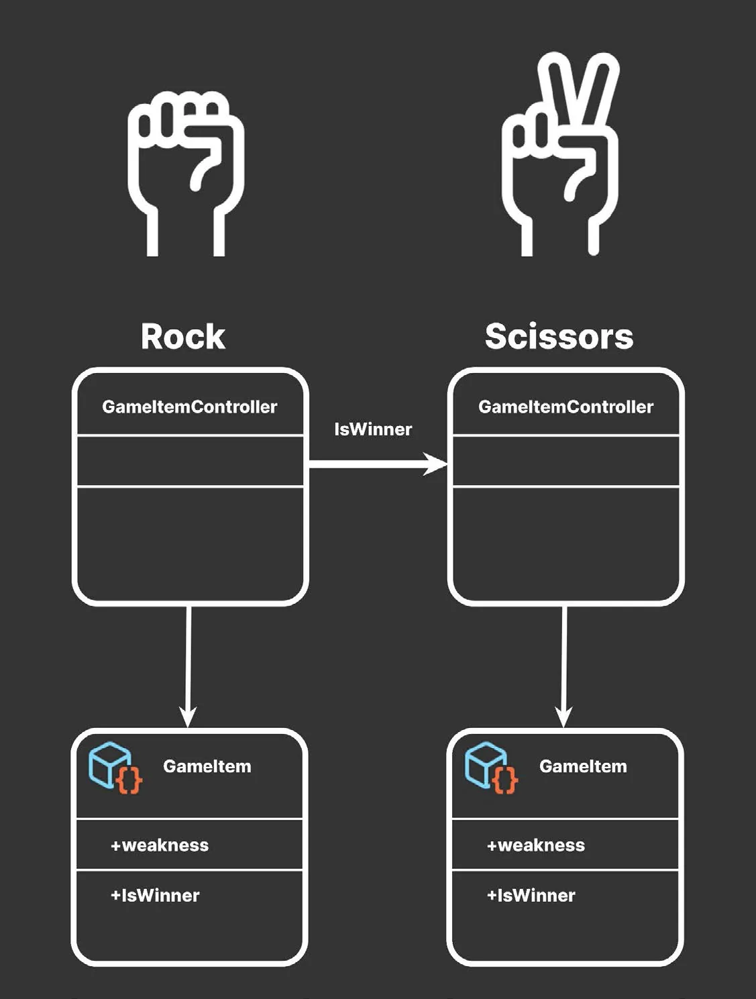

模式：可扩展的枚举（Extendable Enums）
游戏开发有时会让人产生似曾相识（déjà vu）之感，因为它经常需要解决反复出现或彼此相似的问题。幸运的是，你可以借助软件工程师的集体智慧，他们早已用设计模式（Design Pattern）「身经百战」。
设计模式是通用解决方案，能帮助你构建更大、更具可扩展性的应用程序。它们可以提升代码可读性，让你的代码库更整洁。设计模式能减少重构以及测试所花费的时间。
可以把设计模式看作解决常见问题的模板，例如：
- 高效地存储大量数据
- 让来自不同游戏系统的对象彼此通信
- 在运行时动态替换行为
ScriptableObject 可以帮助实现其中的一些模式。你已经看到它们如何充当数据容器，但它们能做的远不止保存数值或设置。接下来的几节将探讨如何超越「用 ScriptableObject 保存数据」这一用法。
类枚举的分类（Enum-like categories）
事实上，ScriptableObject 甚至不必包含任何内容就能发挥作用。如果你创建一个空的 ScriptableObject，你会发现它依然有用，哪怕只是用来与其他 ScriptableObject 进行比较。
在你的游戏应用中，假设你基于一个空的 GameItemSO ScriptableObject 创建了许多资产（Asset），如下所示：
using UnityEngine;
[CreateAssetMenu(fileName="GameItem")]
public class GameItemSO : ScriptableObject
{
}

这让你可以在项目中生成任意数量的资产。即使不包含任何数据，ScriptableObject 本身也能代表一个类别或物品类型。如果你进行相等性比较，它的工作方式与枚举非常相似。
比较 ScriptableObject（Comparing ScriptableObjects）
两个变量是否指向同一个 ScriptableObject？如果是，它们就是同一种物品类型；否则就不是。
因此，你可以用 ScriptableObject 来定义特殊伤害效果（例如寒冷、高温、电击、魔法等），也可以用你最喜欢的零和游戏（Zero-sum Game）里的石头剪刀布（Rock-Paper-Scissors）归属。
如果你的应用需要一个装备游戏物品的库存系统（Inventory System），ScriptableObject 可以代表物品类型或武器槽位（Weapon Slot）。此时检视面板（Inspector）中的字段就成了用于配置它们的拖放式（Drag-and-Drop）界面。


这种对美术友好的 UI 让设计师无需软件开发者的额外支持，就能修改和扩展游戏数据。把维护游戏数据的手段与责任交给设计团队，可以让每个人都专注于自己最擅长的事。
扩展行为（Extending behavior）
当你想要扩展 ScriptableObject 并添加更多数据时，把它们当作枚举来用会变得更有意思。与普通枚举不同，ScriptableObject 可以拥有额外的字段和方法。
下面是改造后的石头剪刀布 GameItem。ScriptableObject 资产本身仍然定义着类似枚举的类别，但这一次它不再是空的。
public class GameItem : ScriptableObject
{
public GameItem weakness;
public bool IsWinner(GameItem other)
{
return other.weakness == this;
}
}
这个 ScriptableObject 现在包含一个 weakness 字段，用于决定在潜在交互中哪个物品会获胜。除了存储数据，每个 ScriptableObject 还在 IsWinner 中包含了简单的比较逻辑。
此后每个游戏物品都需要一个引用特定 ScriptableObject 资产的 MonoBehaviour。下面的示例就是一个可用的控制脚本：
public class GameItemController : MonoBehaviour
{
// 石头、剪刀、布
public GameItem gameItem;
private void OnTriggerEnter(Collider other)
{
GameItemController otherController = other.GetComponent<GameItemController>();
GameItem otherGameItem = otherController.gameItem;
if (gameItem.IsWinner(otherGameItem))
{
Debug.Log(gameItem.name + " beats " + otherGameItem.name);
}
}
}
它把 ScriptableObject 作为字段引用。在 OnTriggerEnter 中，你可以检查 IsWinner 方法，看看当 gameItem 与另一个物品接触时谁会胜出。这为某种类似石头剪刀布的对抗搭好了舞台。
与枚举不同，ScriptableObject 很容易扩展。无需单独的查找表（Lookup Table），也无需与新的数据数组建立对应关系。只需添加一个额外的字段和/或方法来处理逻辑即可。

把这一点与维护传统枚举相比。如果你有一长串没有显式编号的枚举值，插入或删除一个枚举值可能会改变它们的顺序。这种重排序可能引入细微的 bug 或非预期行为。
基于 ScriptableObject 的枚举没有这类问题。向项目中添加更多（或删除现有的），一切照常工作。
假设你想让物品在 RPG 中可装备。你可以给 ScriptableObject 追加一个额外的布尔字段来实现。某些角色不允许持有某些物品？某些物品是魔法物品或具有特殊能力？基于 ScriptableObject 的枚举都能做到。
因此，你的游戏数据可以随着你与设计师的协作而演进。虽然初期需要协调如何设置字段，但之后设计师就可以独立填写细节。